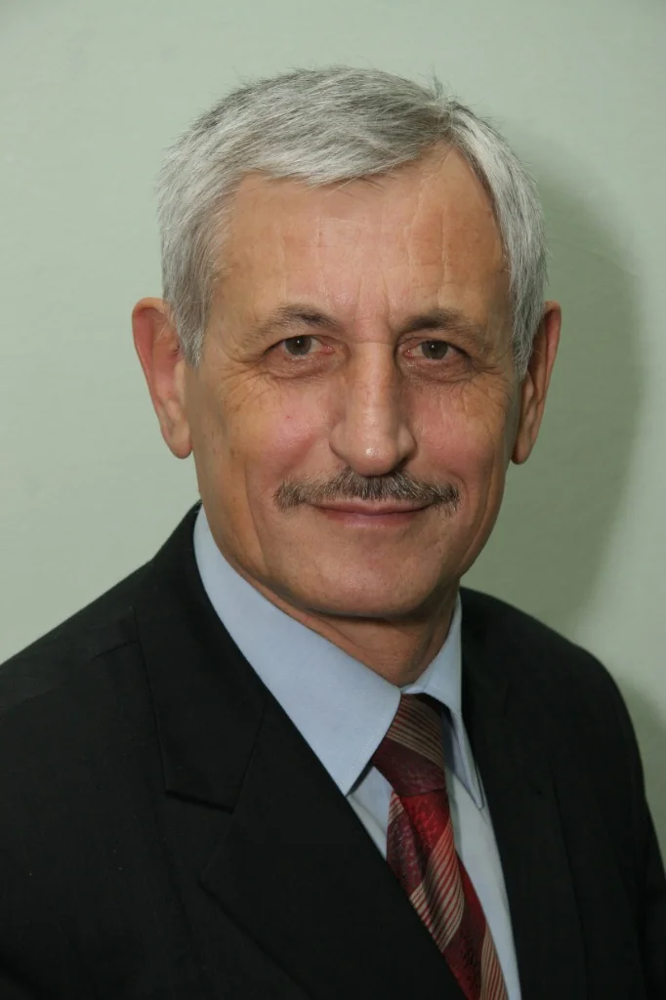

Проба 1 из 4 • Сухожильный шлем и затылок
25%
Выполните прямо сейчас (15 секунд)
Поставьте подушечки пальцев на кожу головы над ушами и плотно прижмите их, чтобы они не скользили по волосам. Мягко попробуйте сдвинуть кожу вверх-вниз и небольшими кругами — в норме она свободно «ходит» вместе с пальцами. Затем проверьте то же самое на затылке, у самого основания черепа.
Что вы почувствовали?
Результат самодиагностики
Ваша карта скрытых напряжений готова

Комментарий по физиологии:
Авторы системы: Михаил Воевода — кандидат медицинских наук (1998), доцент кафедры хирургии (2013), сосудистый хирург с более чем 30-летним практическим опытом; Андрей Воевода — соавтор, эксперт по прикладной биомеханике и формированию привычек (более 12 лет ежедневной личной практики).
Попробуйте на себе прямо сейчас • 30 секунд
Проверьте реакцию нервной системы за 30 секунд
Выполните 3 цикла «Физиологического вздоха» (глубокий вдох носом → короткий дополнительный вдох → долгий плавный выдох через слегка сомкнутые губы), следуя за ритмом круга:
Готовы?
3 цикла • 30 сек
✦ Обратите внимание на ощущения в плечах и глазах:
За 30 секунд вы подали через блуждающий нерв прямой физиологический сигнал к расслаблению — без препаратов и сложных методик. В полной системе собрано более 30 таких выверенных протоколов: для утреннего кровотока, разгрузки шеи, лёгкого пищеварения и глубокого сна.